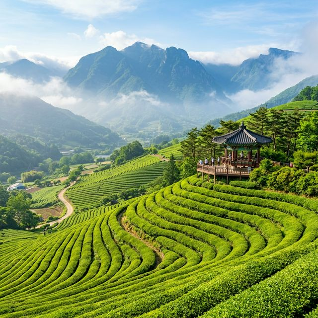
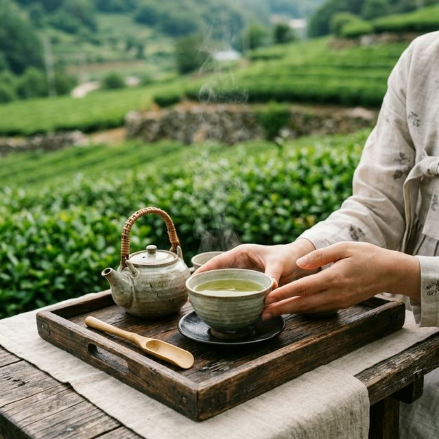
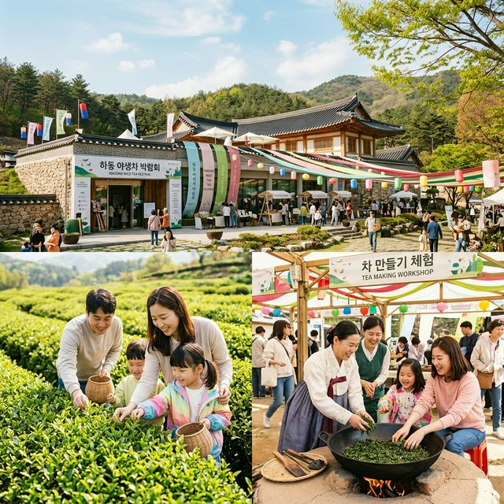

하동 야생차문화축제 2026 일정 및 프로그램 5월 하동 가볼만한곳 완벽 정리
"지리산 자락에서 피어나는 천 년의 차 향기, 하동으로의 초대!"
신록이 짙어지는 5월, 섬진강 맑은 물줄기를 따라 하동의 야생 차밭이 초록빛 물결로 넘실댑니다. '2026 하동 야생차문화축제'는 우리나라 차의 시배지인 하동 화개면
일대에서 펼쳐지는 대한민국 대표 힐링 축제입니다. 단순히 차를 마시는 것을 넘어, 지리산의 정기를 머금은 찻잎을 직접 덖어보고 명인과 함께 다도를 배우며 진정한 '쉼'의 가치를 발견할 수 있는 이번
축제는 5월 가족 여행의 정답이 될 것입니다.
1. 2026 하동 야생차문화축제 일정 및 장소 안내
제29회를 맞이하는 하동 야생차문화축제는 2026년 5월 1일부터 5월 6일까지 6일간 하동군 화개면 쌍계로 일대에서 개최됩니다. 주행사장인 하동야생차박물관과
야생차치유관을 중심으로 화개장터부터 쌍계사까지 이어지는 십리벚꽃길 주변이 차 향기로 가득 채워질 예정입니다.
축제의 시작은 우리나라 차 시배지에서 올리는 헌다례로 경건하게 시작됩니다. 올해는 특히 '차, 치유, 그리고 미래'를 주제로 하여 방문객들이 일상의 스트레스를 내려놓고 자연과 교감할 수 있는 체험
위주의 프로그램이 대폭 강화되었습니다. 5월의 황금연휴 기간과 맞물려 있어 가족 단위 방문객들에게 최고의 선택지가 될 것으로 기대됩니다.
하동의 5월은 기후가 온화하고 차나무의 새순이 돋아나 시각적인 아름다움도 절정에 달합니다. 축제장 주변의 완만한 산책로를 따라 차밭을 거닐면 지리산의 시원한 바람과 차 향기가 어우러져 마치 신선이 된
듯한 기분을 만끽할 수 있습니다. 6일간의 대장정 동안 하동이 선사하는 초록의 위로를 경험해 보세요.

지리산 자락에 펼쳐진 하동의 신비로운 야생 차밭 풍경 / AI 제작 이미지
2. 명인과 함께하는 '티클래스'와 다도 체험의 정수
하동 축제의 가장 큰 매력은 명인들의 비법을 직접 접할 수 있다는 점입니다. 축제 기간 내내 운영되는 '티클래스'에서는 하동 차의 역사와 종류, 그리고 올바르게 차를
우려내고 즐기는 법을 체계적으로 배울 수 있습니다. 명인의 손길을 따라 찻잔을 따뜻하게 데우고 찻잎의 향을 맡는 과정에서 마음의 평온을 찾게 됩니다.
특히 '찻자리 프로그램'은 고즈넉한 야외 공간에서 티마스터와 함께 깊이 있는 대화를 나누며 차를 음미하는 시간으로 구성됩니다. 이는 단순히 음료로서의 차가 아닌, 소통과 배려가 담긴 우리 고유의 차
문화를 깊이 있게 이해하는 계기가 됩니다. 5월의 햇살 아래 조용히 차를 마시며 나 자신을 돌아보는 소중한 시간을 가져보세요.
아이들을 위한 다례 체험도 준비되어 있습니다. 한복을 곱게 차려입고 어른들에게 차를 대접하는 법을 배우는 아이들의 모습은 보는 이들의 미소를 자아냅니다. 전통 예절 교육과 함께 차의 맛에 눈을 뜨는
아이들에게는 잊지 못할 특별한 배움의 장이 될 것입니다.
3. 직접 만드는 나만의 차! 제다 체험과 덖음 공정
하동 야생차의 진가를 느끼고 싶다면 '제다(製茶) 체험'에 참여해 보시길 강력히 추천합니다. 가마솥에 불을 지피고 갓 따온 신선한 찻잎을 고온에서 빠르게 덖어내는 과정은
차의 풍미를 결정짓는 핵심 공정입니다. 뜨거운 열기를 견디며 명인의 지도를 받아 찻잎을 손으로 비비는 '유념' 작업을 통해 나만의 수제 차를 완성할 수 있습니다.
본인이 직접 만든 차는 정성스럽게 포장하여 기념품으로 가져갈 수 있어 방문객들에게 인기가 매우 높습니다. 찻잎이 건조되면서 발산하는 구수한 향은 축제장을 가득 메우며 오감을 자극합니다. 세상에 단
하나뿐인 나만의 하동 야생차를 만들어보는 경험은 하동 축제에서만 누릴 수 있는 특권입니다.
또한, 제다 공정의 과학적 원리를 설명해 주는 부스도 마련되어 있어 교육적인 측면에서도 훌륭합니다. 수분이 빠지며 말라가는 찻잎의 변화를 직접 관찰하며 우리 선조들의 지혜를 엿볼 수 있습니다. 땀 흘려
만든 차 한 잔의 가치는 그 어떤 유명 브랜드의 차와도 비교할 수 없는 감동을 선사할 것입니다.

평온한 분위기 속에서 진행되는 하동 전통 다도 체험 / AI 제작 이미지
4. 힐링의 정점, 녹차 족욕 테라피와 숲길 걷기
축제장 한편에 마련된 녹차 족욕 테라피 공간은 걷느라 지친 발의 피로를 풀어주는 최고의 힐링 장소입니다. 따뜻한 물에 녹차 추출물을 풀어 발을 담그면 녹차의 카테킨 성분이
피로 회복과 피부 진정에 도움을 줍니다. 지리산 계곡 물소리를 배경 삼아 즐기는 족욕은 몸과 마음을 동시에 정화하는 기분을 느끼게 해줍니다.
족욕 후에는 '호리병 속 별천지길'이라 불리는 숲길 산책로를 걸어보세요. 화개장터에서 쌍계사로 이어지는 이 길은 주변의 야생 차밭과 울창한 나무들이 어우러져 최고의 산책 코스를 제공합니다. 5월의
싱그러운 공기를 마시며 걷다 보면 일상의 번잡함은 어느새 사라지고 자연과 하나 된 기분을 느낄 수 있습니다.
길 곳곳에는 차와 관련된 예술 작품들과 시 구절들이 전시되어 있어 지적인 즐거움도 더합니다. 하동의 자연이 주는 선물 같은 풍경 속에서 천천히 걷고, 깊게 호흡하며 진정한 휴식을 취해 보시기 바랍니다.
하동은 바쁜 현대인들에게 가장 느릿하고 편안한 시간을 선물할 준비가 되어 있습니다.
5. 어린이날 특별 프로그램: 키자니아와 함께하는 하동
2026년 하동 야생차문화축제는 5월 5일 어린이날을 맞아 아이들을 위한 파격적인 프로그램을 준비했습니다. 글로벌 직업 체험 테마파크인 '키자니아'와 협업하여 차와 관련된
직업은 물론, 다양한 현대적 직업을 체험해 볼 수 있는 특별 공간이 운영됩니다. 아이들이 하동의 자연 속에서 꿈을 키울 수 있는 소중한 기회입니다.
또한, 어린이를 대상으로 하는 '차 도서 낭독회'와 '나만의 찻잔 꾸미기' 등 창의력을 자극하는 활동들도 풍성하게 마련되어 있습니다. 아이들이 좋아하는 다양한 간식 부스와 마술 공연, 풍선 아트 이벤트
등이 축제 분위기를 한층 밝게 만들어줄 것입니다. 부모님들에게는 아이들의 웃음소리가 가장 큰 축제의 즐거움이 될 것입니다.
축제장 내에는 유모차 대여와 수유실 등 편의시설이 잘 갖춰져 있어 영유아 동반 가족들도 큰 불편함 없이 축제를 즐길 수 있습니다. 5월 어린이날, 아이들에게 건강한 자연의 향기와 함께 특별한 추억을
선물하고 싶다면 하동 야생차문화축제가 최적의 장소가 될 것입니다.
6. 하동의 맛을 찾아서: 차시장과 로컬 푸드 존
축제의 즐거움에서 먹거리와 쇼핑을 빼놓을 수 없겠죠. '하동 차시장'에서는 하동의 수많은 다원에서 직접 생산한 고품질의 야생차를 시음해 보고 저렴한 가격에 구매할 수
있습니다. 수령이 오래된 야생 차나무에서 채취한 귀한 차부터 대중적으로 즐길 수 있는 녹차, 발효차까지 한자리에서 만나볼 수 있는 국내 최대의 차 시장입니다.
'하동별맛 푸드존'에서는 지역 특산물을 활용한 이색 요리들이 방문객들을 기다립니다. 재첩국, 참게탕 등 하동의 정통 먹거리는 물론, 녹차 아이스크림, 녹차 호떡, 녹차 약과 등 차를 활용한 다양한
디저트들도 인기 만점입니다. 섬진강의 신선한 맛과 지리산의 깊은 풍미를 동시에 경험할 수 있는 미식 여행의 장이 펼쳐집니다.
농특산물 판매장에서는 하동의 청정 환경에서 자란 산나물, 매실, 대봉감 가공품 등 믿을 수 있는 지역 농산물을 직거래로 구입할 수 있습니다. 생산자의 얼굴이 그려진 제품들은 신뢰를 더하며, 여행 후에도
하동의 맛을 가정에서 즐길 수 있게 해줍니다. 든든한 먹거리와 풍성한 쇼핑 목록은 하동 여행의 만족도를 더욱 높여줄 것입니다.

축제의 중심 활기가 넘치는 하동 야생차박물관 야외 행사장 / AI 제작 이미지
7. 하동 여행 연계 코스: 삼성궁과 최참판댁
축제장인 화개면을 벗어나 하동의 다른 명소들도 함께 둘러보시길 추천합니다. 먼저 '청학동 삼성궁'은 에메랄드빛 연못과 기묘한 돌탑들이 어우러진 신비로운 풍경으로
유명합니다. 마치 다른 세계에 온 듯한 이국적인 분위기는 사진가들뿐만 아니라 모든 여행자에게 감동을 선사합니다. 5월의 푸른 잎들이 돌탑과 대비되어 더욱 아름다운 색감을 자아냅니다.
소설 '토지'의 배경인 '평사리 최참판댁'도 필수 코스입니다. 드넓게 펼쳐진 무딤이 들판과 유유히 흐르는 섬진강을 한눈에 내려다볼 수 있는 이곳은 영남 선비 문화의 자취를
느낄 수 있는 곳입니다. 드라마 세트장이 아닌 실제 거주하는 마을 같은 정겨움이 느껴지며, 곳곳에 핀 봄꽃들이 여행의 정취를 더해줍니다.
액티비티를 즐긴다면 금오산에 위치한 '알프스 짚와이어'에 도전해 보세요. 아시아 최장 길이를 자랑하는 이 짚와이어는 다도해의 비경을 바라보며 시원하게 활강하는 짜릿한 경험을 선사합니다. 정적인 차
문화와 동적인 액티비티를 적절히 믹스하면 더욱 풍성하고 균형 잡힌 하동 여행을 완성할 수 있습니다.
8. 하동 야생차박물관 이용 팁: 주차 및 관람 안내
하동 야생차박물관은 원칙적으로 관람료가 무료입니다. 하지만 축제 기간 중 진행되는 전문 티클래스나 제다 체험 등은 소정의 체험비(5,000원~10,000원 내외)가 발생할
수 있으니 참고하시기 바랍니다. 일부 인기 프로그램은 현장에서 조기에 마감될 수 있으므로, 축제장에 도착하자마자 체험 예약 부스를 먼저 방문하는 것이 노하우입니다.
주차는 박물관 주변 공영 주차장을 무료로 이용할 수 있으나, 축제 기간에는 화개면 일대가 매우 혼잡합니다. 가급적 오전 일찍 방문하시거나 하동군에서 운영하는 임시 셔틀버스를 이용하시는 것을 추천합니다.
특히 십리벚꽃길 주변은 도로가 좁아 주말에는 차량 이동이 어려울 수 있으니 여유 있는 일정 계획이 필수입니다.
박물관 2층 전시실에서는 우리나라 차 문화의 변천사를 한눈에 볼 수 있는 유물들이 전시되어 있습니다. 축제의 흥겨운 분위기 속에서도 잠시 시간을 내어 차의 역사적 가치를 공부해보는 것도 의미 있는
일입니다. 해설사님의 설명을 곁들이면 훨씬 깊이 있는 관람이 가능하니 안내 데스크에 문의해 보세요.
9. 맺음말: 차 한 잔에 담긴 하동의 진심을 만나다
지금까지 2026 하동 야생차문화축제의 상세한 일정과 프로그램을 소개해 드렸습니다. 하동의 야생차는 혹독한 겨울을 이겨내고 바위틈에서 자라난 강인한 생명력의 상징입니다.
그 찻잎이 뜨거운 열기를 견디고 우리에게 향기로운 차로 다가오듯, 우리 역시 하동의 차 한 잔을 통해 일상의 고단함을 씻어내고 새로운 에너지를 얻을 수 있을 것입니다.
5월의 푸른 자연과 천 년의 역사가 살아있는 하동, 그곳에서만 느낄 수 있는 특별한 힐링 여정을 꼭 경험해 보세요. 차 향기 가득한 지리산 자락에서 여러분의 봄날이 초록빛으로 물들길 바랍니다. 영주
선비의 정취와 함께 하동의 차 향기로 채워지는 5월, 여러분의 여행 가방을 지금 바로 챙겨보세요!
#하동야생차문화축제
#2026축제일정
#하동가볼만한곳
#5월여행지추천
#지리산여행
#차체험
#다도체험
#어린이날가볼만한곳
#하동야생차박물관
#최참판댁